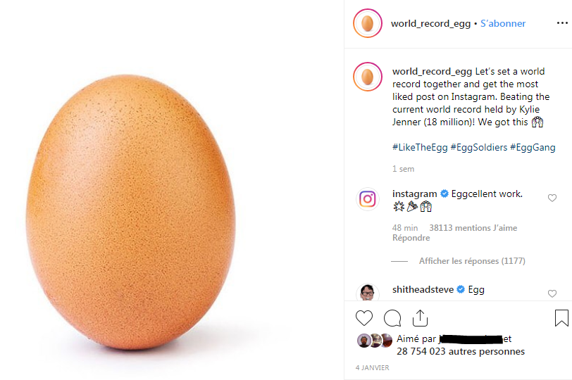
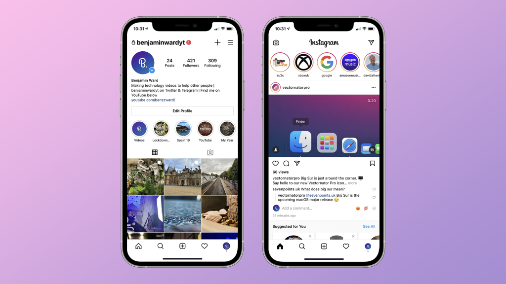
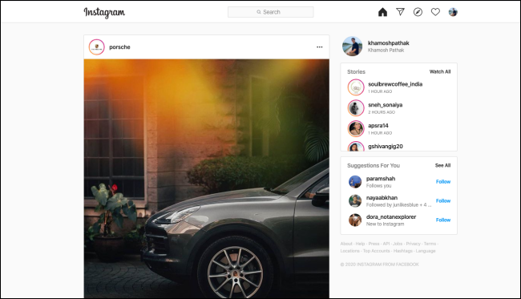
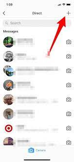
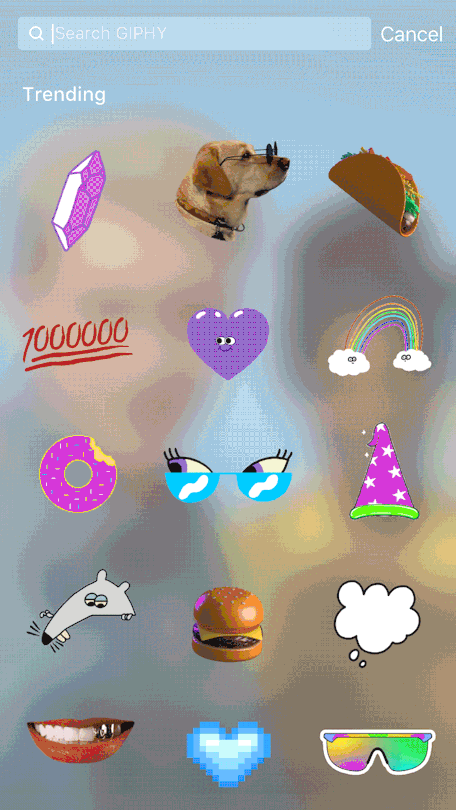
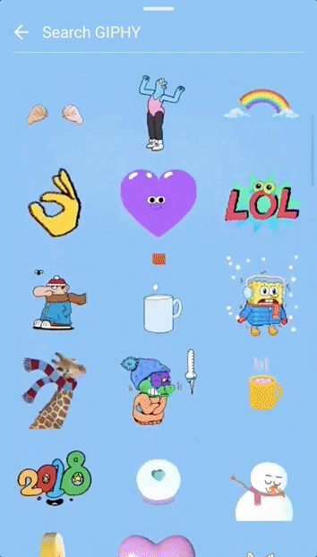

Sur instagram, lorsque quelqu'un se connecte d'un autre appareil, on reçoit ue notification. Se faire pirater sur instagram c'est très simple : instagram
Quelles sont les fonctionnalitées d'instagram :
Sur instagram on peut liker des publications, les commenter, les partager...

Interfaces d'instagram


sur instagram on peut parler par discussion messages :

Les hasshtag et les gif sur instagram :
sur Twitter, instagram fonctionne avec les hashtags, que l'on met généralement soit dans l'espace commentaire ou soit dans la description de la publication. On peut utiliser jusqu'à 30 hashtags sur une publication et 10 sur les stories. Depuis mars 2020, les hashtags les plus populaires de tous les temps incluent : #love (1,7 milliard de publications) #instagood (1,1 milliard de publications) #photooftheday (763 millions de publications)


Se désinscrire sur instagram :
Se désinscrired'instagram est assez compliqué, il faut se connecter sur son compte instagram depuis la page web de ce dernier : instagram pour ainsi pouvoir désactiver son compte, on ne peut désactiver son compte direcetement depuis l'applications
De plus vous pouvez désactiver votre compte mais vous pouvez le réactiver, c'est à dire que aucun contenu n'est supprimé donc lorsque l'on supprime ou désactive un compte instagram il n'est pas réellement supprimé comme les discussions messages, lorsque l'on supprime un message il n'est pas supprimé afin que la police puisse traquer les discussions.